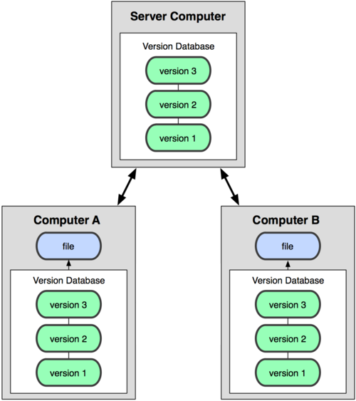

Versiones locales

| z, ? | toggle help (this) |
| space, → | next slide |
| shift-space, ← | previous slide |
| d | toggle debug mode |
| ## <ret> | go to slide # |
| c, t | table of contents (vi) |
| f | toggle footer |
| r | reload slides |
| n | toggle notes |
| p | run preshow |


git config --global branch.autosetuprebase alwaysmkdir myrepo # md for win
cd myrepo
git initvim Readme # (mate, nano, edit...)
git status
git add
git commit -m 'Add readme file'
vim Readme # (mate, nano, edit...)
git statusgit add
git statusgit commit
git statusgit checkout -b test
git branch -a
git statusHaz al menos dos commits en la branch test
git checkout master
git log
git checkout test
git loggit checkout master
git merge test
git loggit branch -d test
Crea un repositorio en github.com
git remote add origin git@github.com:...git push -u origin master
<<<<<<< HEAD:file.txt
Hello world
=======
Goodbye
>>>>>>> 77976d:file.txt